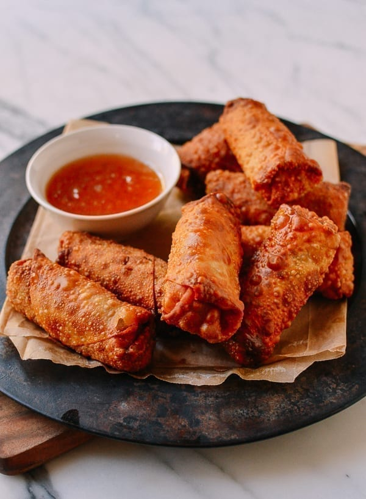

Egg Rolls

Description
A basic Chinese takeout style eggroll made with cabbage and pork filling. Makes roughly 2 dozen.
Ingredients
- 8 cups shredded savoy cabbage
- 8 cups shredded green cabbage
- 2 cups shredded carrots
- 2 cups shredded celery
- 3 chopped scallions
- 2 1/2 teaspoons salt
- 2 teaspoons sugar
- 1 tablespoon sesame oil
- 2 tablespoons peanut or vegetable oil
- 1/4 teaspoon white pepper
- 3 cups shredded or diced roast pork
- 2 cups chopped cooked shrimp (optional)
- 1 package eggroll wrappers
- 1 beaten egg
Directions
- Bring a large pot of water to a boil. Put the cabbage, carrots, and celery into the boiling water and cook for about 2 minutes. Transfer the veggies to an ice bath and drain. Thoroughly squeeze out all the excess water from the vegetables (you can put the drained veggies in a clean kitchen towel and squeeze out the water). This is a very important step because if the filling is too wet, you will have a wet filling and soggy egg rolls!
- Once dry, transfer the veggies to a large mixing bowl. Add the scallions, salt, sugar, sesame oil, 2 tablespoons oil, five spice powder (if using), white pepper, roast pork, and cooked shrimp (if using). Toss everything together. The filling is ready to be wrapped!
- To wrap the egg rolls, take a small fistful of filling, squeeze it a little in your hand until it is compressed together, and place it on the wrapper. The wrapping method is similar to that of a burrito. Just add a thin layer of egg to make sure it stays sealed. Line them up on a lightly floured surface, and continue assembling until you run out of ingredients.
- In a small pot, heat oil to 325 degrees. You don't need too much—just enough to submerge the egg rolls. Carefully place a couple egg rolls into the oil, and fry them for about 5 minutes until golden brown. Keep them moving in the oil to make sure they fry evenly.
- Cool slightly and serve! Freeze leftovers in freezer bags and reheat them in the oven at 350 degrees, until crispy.
Source
The Woks of Life